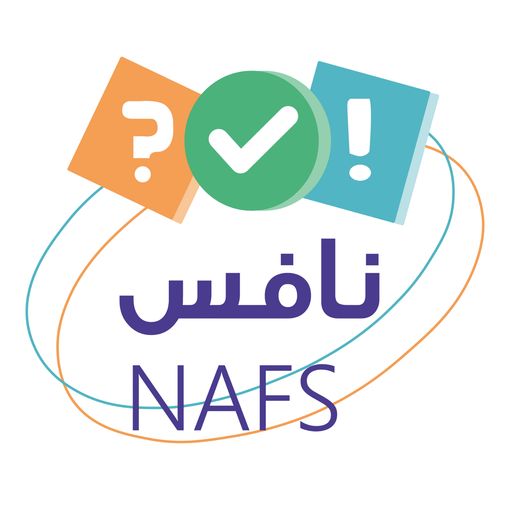

⭐ تدريب تفاعلي

الإدارة العامة للتعليم بمنطقة نجران
مدرسة علي بن أبي طالب الابتدائية
منصة تدريب اختبار نافس
الصف السادس الابتدائي
تحميل توزيع مهارات (خطة ١٠٠ يوم) PDF
أهلًا وسهلًا يا بطل
👋
اكتب اسمك ثم اختر المادة، بعدها اختر الصف والأسبوع واضغط ابدأ 🚀